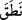

3. O, arzusuna göre de konuşmaz.
“O, arzusuna göre de konuşmaz.” Kâmus’ta belirtildiği üzere “
”, “mânâların
anlaşılması için ses ve harflerle konuşmak” anlamına gelmektedir. Bu kelime Allah
Teâlâ için kullanılamaz. Zira ses ve harflerle konuşmak mahlûkâta âid bir fiildir.
“Hevâ”, aslında “sevmek” demektir. Fakat normal anlamının dışına çıkılarak şehvet ve
lezzetlerle ilgili fiillere isim olmuştur. Bu nedenle “bid’atçı” için “hevâ sâhibi”
denmiştir. Çünkü o kimse dînî konuda hevâsından gelen şeye meyillidir. “Hevâ”,
kötülenmiş bir husûsa olan meyildir. Bu nedenle Allah peygamberlerini hevâya
uymaktan men etmiştir. Dâvûd (a.s.)’a: “Keyfine uyma,” (Sâd, 38/26), Peygamberimiz
(s.a.)’e de: “Onların keyiflerine uyma!” (el-Mâide, 5/48) buyurmuştur. Bu nedenle
Rasûlullah (s.a.)’in: “Hiçbir peygamber hevâ ve hevesine meyletmemiştir”[72] kavl-i
şerifinde olduğu gibi hiçbir peygamber buna yeltenmemiştir.
Büyüklerden birinden şöyle hikâye olunmuştur: “Bazı gâfillerin meclisinde
bulunuyordum. İçlerinden biri: “Velev ki bizden biri olsa bile hiç kimsenin hevâdan
kurtuluş imkânı yoktur. Çünkü bu hususta Peygamber (s.a.) dâhi: “Bana dünyanızdan;
güzel koku, kadın ve gözümün nûru olan namaz sevdirildi”[73] buyurmuştur” dedi.
Bunu söyleyen kişiye: “Allah Teâlâ’dan utan!... Peygamber (a.s.) “Ben bu üç şeyi
sevdim” dememiştir. Bilâkis “sevdirildi” buyurmuştur. O halde Allah tarafından
sevdirilen bir kul nasıl kötü bir işe (kadın sevgisine düşkünlüğe) nisbet edilebilir?”
dedim. O sırada da içimi hüzün ve gam kaplamıştı ki o gece rüyamda Rasûlullah
(s.a.)’ın: “Üzülme, biz onun işini hallettik” diye bir ses duymuş olmasaydım üzüntüm
daha da artardı. Hakikaten bu sözleri söyleyen kimsenin daha sonra arazisine giderken
yolda öldürülmüş olduğunu haber aldım. Peygamberlerden ve onların vârisleri olan
velîlerden kendilerini üstün tutanlardan Allah’a sığınırız.
Âyetin mânâsı: “Peygamber (a.s.)’den Kur’an’la ilgili sâdır olan kelâm asla onun
hevâsından ve rey’inden değildir” şeklindedir. Bundan murad da Rasûlullah (s.a.)’ın
Kur’an’dan konuşmasının dâimî olarak nefyi değil, hevâ ile Kur’an’dan konuşmasının
dâimî nefyidir. Rasûlullah hevâsı ile konuşmaz.
İbn Şeyh, Allah Teâlâ’nın önce “mâ dalle” (sapmadı), “mâ ğavâ” (azmadı) âyetini
mazî sîgasıyla, “mâ yantıku” (konuşmaz) âyetini de istikbâl (muzârî) sîgasıyla
getirmesindeki maksadın, Rasûlullah (s.a.)’ın bi’setten önceki ve sonraki hâlini
açıklamak için olduğunu belirtmekte ve mânânın şöyle takdir olunması gerektiğini beyân
etmektedir: “Rasûlullah (s.a.) peygamber olarak gönderilmeden önce, sizi
taptıklarınızla başbaşa bırakıp uzlete çekildiği zaman da sapıtıp azmadı. Şimdi de
Rabb’inin âyetlerini size okurken hevâ ve nefsiyle konuşmamaktadır.”
Ben de derim ki; burada gizli olmayan bir ibrâ/Rasûlullah’ı berî kılma vardır. Zâhir
olan şu ki müşrikerin “sapıttı, azdı” sözlerinin mâzî sîgasıyla getirilmiş olması, onların